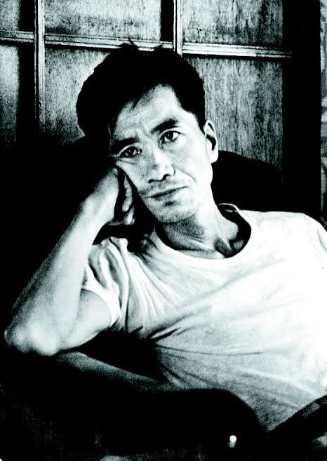

여는 시 · 시인

헤더 제공 사진
1921
서울에서 태어남. 일제강점기에 일본 도쿄로 유학
1945
광복 뒤 시를 쓰기 시작함
1950
한국전쟁 중 끌려갔다가 포로수용소 생활 — 오늘 시에 그 기억이 나옴
1960
4·19 뒤, 자유와 양심을 정면으로 쓰는 시인이 됨
1965
「어느 날 고궁을 나오면서」
1968
마지막 시 「풀」. 같은 해 6월 사고로 숨짐
일제강점기 시인이 아니라, 광복 20년 뒤의 시입니다.
오늘은 이 시로 문을 열고 20여 년 전의 윤동주에게 거슬러 갑니다.